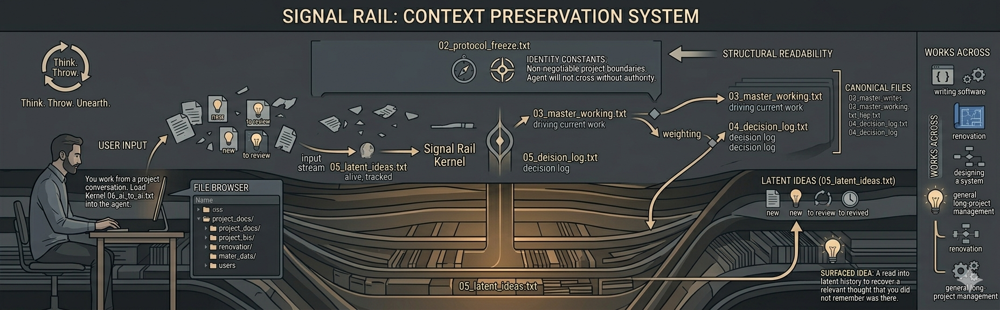
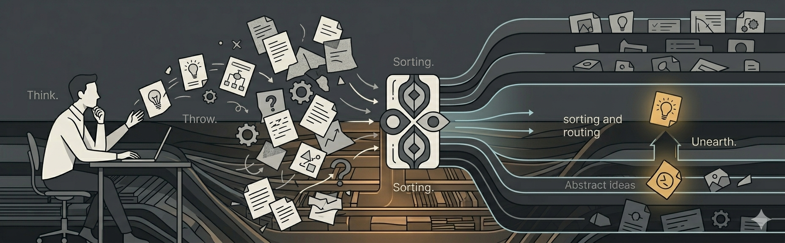
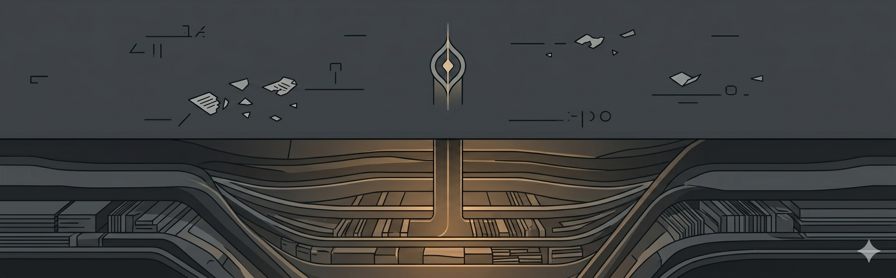

Think
Material begins in real work: a pressure point, a decision edge, a technical risk, a line that still does not know its final level.

Signal Rail
A text-first governance system for AI-assisted project work.
Signal Rail captures live project material, routes it by authority, and keeps it recoverable without flattening everything into one documentary surface.
Operational gesture

Material begins in real work: a pressure point, a decision edge, a technical risk, a line that still does not know its final level.
The material enters the system and is weighed, delayed, routed, promoted, or held without being forced into the wrong file too early.
The right line can resurface from the right layer later, without manual reconstruction and without pretending memory is enough.
The agent is not corrected after the fact. It is routed before acting.
Failure mode
Signal Rail exists to prevent current work, won decisions, unresolved material, technical topology, and continuity from collapsing into the same documentary surface.
Mechanism
Authority-bearing project truth: identity, freeze, live state, decision, latent gravity, technical topology.
Shared horizontal agent behavior running across the whole surface.
Useful but intentionally non-canonical surfaces for continuity, findings, parking, and archive.
Authority before convenience.
Architecture
01 Orientation
02 Protocol Freeze
03 Master Working
08 Surface Map
04 Decision Log
99 Archive
05 Latent Ideas
98 Parking
Focus
Identity constants: the lines the project should not casually lose, and the layer the agent treats as non-negotiable without explicit human authority.
Focus
Nothing dies. Nothing contaminates the present before it has earned its place there.
Kernel
06_ai_to_ai.txt defines shared horizontal behavior.
Local AI SECTION blocks define file-local rule sources.
Canonicals carry truth. Support surfaces remain useful without becoming truth.
Protocol
Support surfaces

Signal Rail does not flatten everything into canonicals. Some surfaces stay useful precisely because they do not claim more authority than they should.
Continuity
Field findings
Parking
Archive
Boundary model
The shipped system.
The tool surface used inside real work.
The actual governed project.
Operational setup
Prepares the surface, not the project truth.
A controlled structural pass with stable invariants.